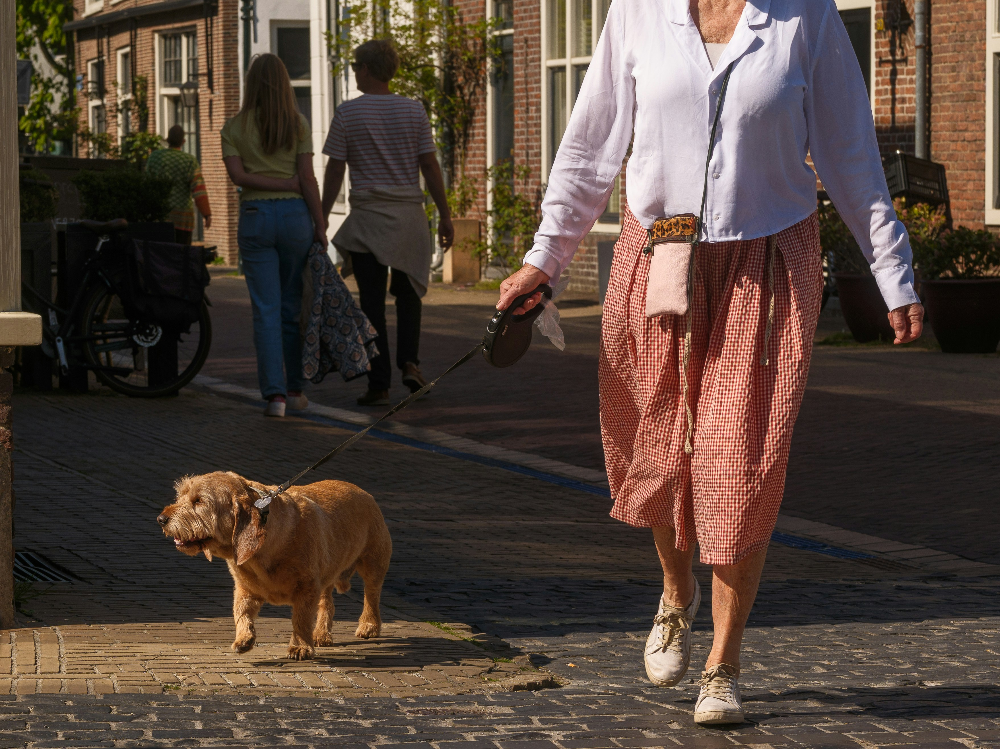
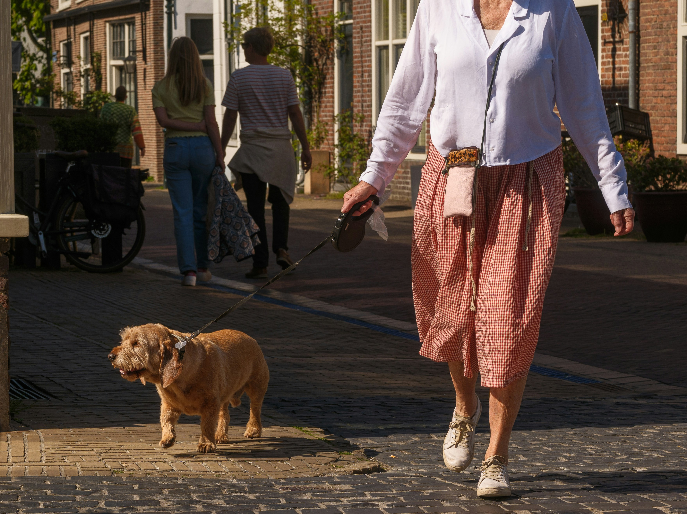

✨ Peak Pets – Business Insights
Project Overview
Peak Pets is a full-featured web application built for a fictional pet care business that offers in-home pet sitting, online booking, and an e-commerce store for pet supplies. The goal was to create a seamless digital experience that builds trust with pet owners and supports small business operations with booking automation and product sales.
Target Audience
- Busy pet owners (especially professionals, travelers, and elderly individuals)
- Local clients who need trusted, in-home pet services
- Customers looking to purchase pet supplies online with convenience
 

Tech Stack
Next.js, React.js, TailwindCSS, Contentful CMS, GitHub, Clerk, Vercel, Stripe (or simulated checkout)
Business Problem
Small pet care providers often struggle with:
- Manual appointment scheduling (via phone/email)
- Lack of online presence
- Limited product visibility or sales channels for pet supplies
How the Website Solves These Problems
Booking System
- Enables clients to schedule pet sitting sessions online, reducing admin workload.
Online Store
- Offers an integrated storefront to sell pet supplies, boosting revenue with minimal overhead.
CMS Integration
- Allows the business owner to update services, products, and pricing without technical skills.
Mobile-Responsive UI
- Makes browsing and booking accessible on any devices and improve user-flow and user-experience.
Trust-Building Design
- Clean visuals and friendly illustrations establish emotional connection and professionalism.
Key Features
- In-home pet sitting reservation system
- Online product catalog and checkout flow
- Custom CMS for managing listings and content
- Clean, responsive UI with modern design principles
- Business insight section that simulates real-world decision-making
Result
After implementing the digital platform, the pet care business experienced improved booking efficiency, stronger client engagement, and increased online visibility. The modern, responsive design also helped boost brand trust and professionalism.